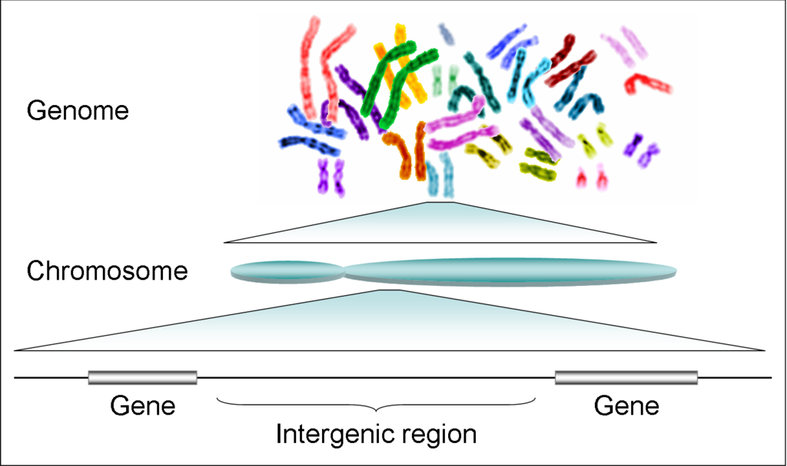
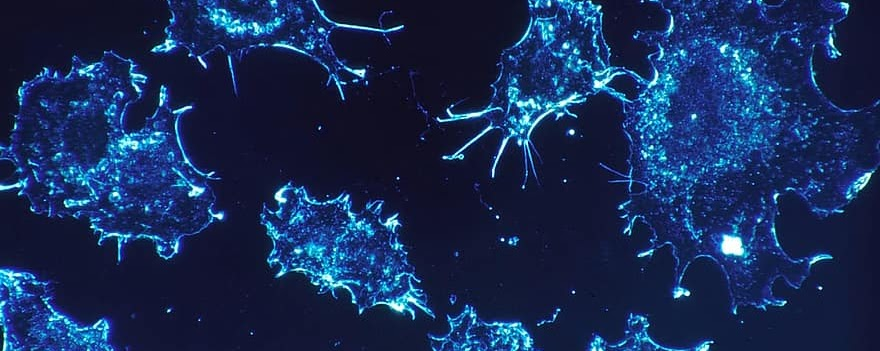
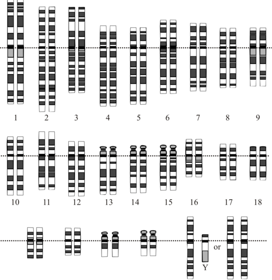
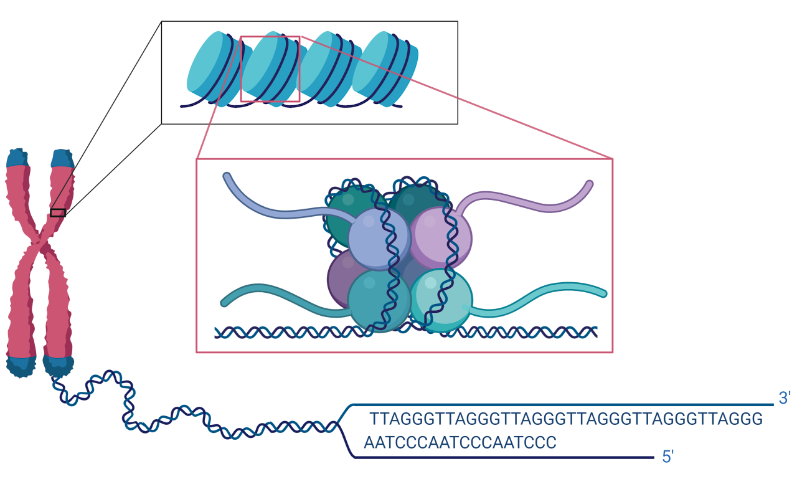
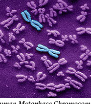
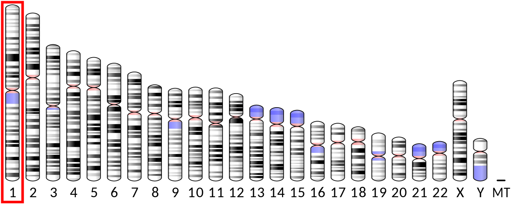
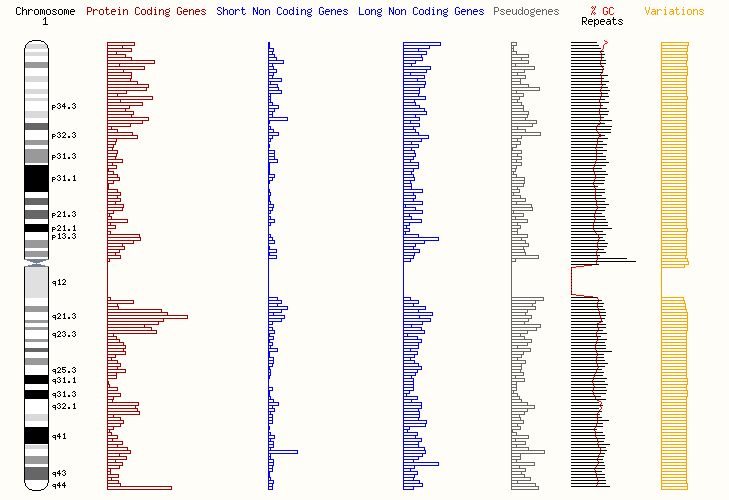
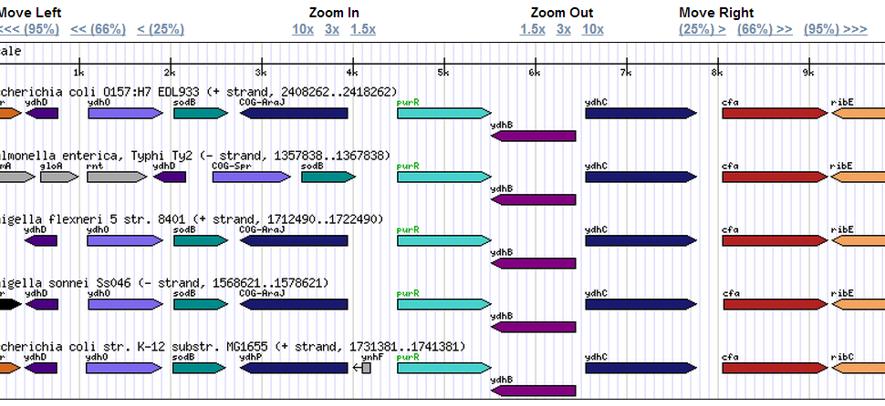
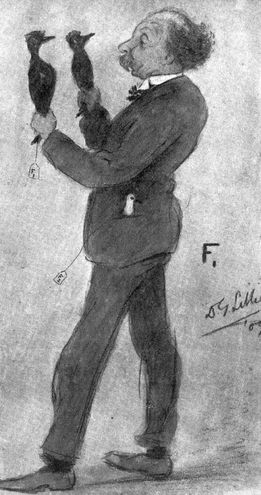

Start with the connections
Genomic medicine brings together the biology of inheritance, the measurement of genomes and the interpretation of evidence. This primer is for MPhil and MRes students joining from different clinical, scientific and computational backgrounds. You do not need to arrive knowing every term.
Work through the explanations in order if genetics is new to you. If you already know the basics, use the contents list to revisit a topic and try the worked examples. The questions open to reveal explanations; they are for your own preparation and do not submit answers.
By the end, you should be able to
- Connect DNA, genes, transcripts, proteins and the genome.
- Distinguish homologous chromosomes, sister chromatids, ploidy and DNA content.
- Use a simple inheritance model and explain its assumptions.
- Separate a variant's sequence change from its possible biological and clinical significance.
- Find a gene in a genome browser and record the reference assembly and coordinates.
Updated September 2026.
DNA, genes and genomes
Start with the molecule
DNA stores sequence information in four bases: adenine (A), cytosine (C), guanine (G) and thymine (T). Its two strands are complementary: A pairs with T, and C with G. They run in opposite directions, described as 5′ to 3′ and 3′ to 5′. The direction matters when reading a sequence or working out which strand is transcribed.
A base pair is a pair of complementary bases across the two strands. DNA lengths are usually given in base pairs (bp), kilobases (kb, thousands of bases) or megabases (Mb, millions of bases). A sequence is conventionally written in the 5′ to 3′ direction unless stated otherwise. See the NHGRI introduction to DNA.
A gene is more than a protein recipe
A gene is a region of DNA whose expression produces a functional product. For a protein-coding gene, that product is made through an RNA intermediate. Other genes produce functional RNAs, including ribosomal RNAs and transfer RNAs, without being translated into proteins. Humans have approximately 20,000 protein-coding genes; precise counts depend on the annotation being used. NHGRI: genes.
The genome includes all of an organism's genetic material, including DNA within genes and between them. The human genome includes the nuclear chromosomes and mitochondrial DNA. A single reference-scale nuclear complement contains roughly three billion bases. That is not the amount of DNA in every human cell: chromosome copy number and replication state also matter. NHGRI: genomes.
{kind=link}

Most human DNA does not encode protein sequence. Noncoding DNA includes introns, untranslated parts of transcripts, regulatory elements and many repeated sequences. Some noncoding regions have established functions; others remain incompletely understood. “Noncoding” does not mean “unimportant”, and a variant does not need to lie in a protein-coding exon to have an effect. MedlinePlus: noncoding DNA.
Check your understanding: does sequencing every protein-coding exon sequence the whole genome?
No. It targets a subset of the genome. Intergenic DNA, most introns and other regions are outside that target, and coverage of a targeted region may itself be incomplete. Keep the scope of a test separate from the scope of the biological question.
From DNA to RNA to protein
Transcription copies information from a DNA template into RNA. RNA uses uracil (U) where DNA uses thymine. For a typical human protein-coding gene, the initial RNA is processed before it becomes a mature messenger RNA (mRNA). Translation then uses the mRNA sequence to build a chain of amino acids at a ribosome. These are distinct processes: transcription makes RNA; translation makes a polypeptide. Transcription and translation in the NHGRI glossary.
Reading a short sequence
During translation, mRNA is read in groups of three bases called codons. The reading frame determines how those groups are divided. The example below is deliberately short and hypothetical; it illustrates the standard genetic code rather than a complete human gene.
| Molecule / product | Sequence in this example |
|---|---|
| Coding DNA strand | 5′ ATG GCT TTT TAA 3′ |
| Template DNA strand | 3′ TAC CGA AAA ATT 5′ |
| mRNA | 5′ AUG GCU UUU UAA 3′ |
| Peptide | Methionine–alanine–phenylalanine, then stop |
Genes, exons and transcripts
Exons are the portions retained in a mature spliced RNA. Introns are removed during splicing. An exon is not necessarily entirely protein-coding: the 5′ and 3′ untranslated regions (UTRs) are also part of the mature transcript. The coding sequence (CDS) is the portion translated into protein. Exons and introns.
Different splice choices can produce different transcripts from the same gene. This is alternative splicing. Consequently, “the gene”, “a transcript” and “the protein” are not interchangeable labels. A variant can affect an exon in one transcript but lie outside the coding sequence of another. When examining a consequence, record which transcript is being discussed. NHGRI: alternative splicing.
Gene expression is regulated: different cells use different parts of their shared genome at different times. Promoters help initiate transcription, while other regulatory elements can influence when and where a gene is expressed. The presence of a DNA sequence does not show that it is actively transcribed in a particular tissue. MedlinePlus: switching genes on and off.
Check your understanding: are all exons translated?
No. Exons can contain untranslated regions, and some transcripts do not encode proteins at all. In a genome browser, identify the transcript and the track's convention for distinguishing coding sequence from untranslated sequence.
Cells, chromosomes and DNA packaging
Human bodies contain trillions of cells. Most nucleated cells contain a nuclear genome, and mitochondria contain their own small genome in multiple copies. There are exceptions to a simple “every cell is identical” model: mature red blood cells have no nucleus, gametes have a different chromosome complement from most body cells, and somatic variants can arise during life.
{kind=link}

An unreplicated nuclear chromosome contains one long double-stranded DNA molecule associated with proteins. Human nuclear chromosomes are linear. A typical diploid human cell has 46 chromosomes: 22 pairs of autosomes and a pair of sex chromosomes. The familiar XX and XY complements are common examples; other complements occur. Mitochondrial DNA is separate from this count. NHGRI: chromosomes.
{kind=link}

Homologues are not sister chromatids
The two members of an autosomal pair are homologous chromosomes: one inherited from each parent. They carry corresponding loci but may carry different alleles. When DNA is replicated, each chromosome is copied to form two sister chromatids. Those sister chromatids remain connected until they separate during cell division. Replicating a chromosome does not turn its two chromatids into a maternal–paternal pair. NHGRI: chromatids.
Packaging is part of regulation
Chromatin is DNA together with its associated proteins. DNA wraps around histone cores to form nucleosomes, with linker DNA connecting neighbouring nucleosomes. This organisation packages DNA and helps control access to it. The condensed chromosomes seen during cell division represent one state of chromatin, rather than its appearance throughout a cell's life. Chromatin and nucleosomes.
{kind=link}

Telomeres are specialised regions at chromosome ends that help protect them. The centromere is the chromosome region associated with the machinery that segregates chromosomes during cell division. Neither term is a synonym for a gene. Telomeres and centromeres.
Euchromatin and heterochromatin describe relatively accessible and more compact chromatin states. These are useful tendencies, not a rule that every gene in one region is permanently on or off. Chromatin and gene regulation are explored further in GM10: Epigenetics and disorders of the epigenome.
Chromosome number is not DNA quantity
Ploidy describes the number of chromosome sets: haploid (n) means one set and diploid (2n) means two. DNA content is a different measurement. Here, C denotes the DNA quantity of one unreplicated haploid nuclear complement. During S phase, a diploid cell copies its DNA from 2C to 4C while remaining diploid. The table uses idealised human examples. NHGRI: diploid; NCBI Bookshelf: the cell cycle.
| Cell / stage | Chromosomes | Chromatids / DNA molecules | Ploidy | DNA content |
|---|---|---|---|---|
| Mature sperm | 23 | 23 | n | 1C |
| Somatic cell before DNA replication | 46 | 46 | 2n | 2C |
| Somatic cell at metaphase after replication | 46 | 92 | 2n | 4C |
{kind=link}

Mitosis separates sister chromatids so that daughter nuclei normally receive the same chromosome complement. Meiosis includes two divisions after one round of DNA replication. Homologous chromosomes separate in the first meiotic division and sister chromatids in the second, reducing the number of chromosome sets. Recombination between homologues helps generate new combinations of alleles. Mitosis and meiosis.
Check your understanding: has a cell become tetraploid after it copies its DNA?
No. In this example it has two chromosome sets both before and after replication. It changes from 2n, 2C to 2n, 4C. The metaphase cell has 46 replicated chromosomes comprising 92 sister chromatids, not 92 chromosomes and not four chromosome sets.
Alleles, inheritance and phenotype
An allele is a version of a sequence at a particular locus. At many autosomal loci, a person has two copies, one on each homologue. A person is homozygous when those alleles are the same and heterozygous when they differ. Hemizygous describes having only one copy at a locus, as occurs for many X-linked loci in a person with one X chromosome. NHGRI: alleles; MedlinePlus: inheritance patterns.
Genotype describes the genetic constitution at the locus or loci under discussion. Phenotype describes an observable or measurable characteristic. Phenotype reflects genotype together with biological and environmental context. Eye colour involves multiple genes, so a single “brown dominant, blue recessive” example is misleading. We will use an explicitly simplified model instead. MedlinePlus: eye colour.
A worked inheritance model: Aa × Aa
Suppose each parent is heterozygous at one autosomal locus, carrying alleles A and a. Assume each parent transmits either allele with equal probability, and the transmissions are independent. The four equally likely combinations give the following genotype probabilities for each conception.
| Parent 1 allele / Parent 2 allele | A (½) | a (½) |
|---|---|---|
| A (½) | AA (¼) | Aa (¼) |
| a (½) | Aa (¼) | aa (¼) |
The result is 25% AA, 50% Aa and 25% aa. These are probabilities, not a prediction that every family of four will have one, two and one children with those genotypes. To predict a phenotype, we would need an additional model connecting each genotype with the characteristic being studied.
What the Mendelian model does—and does not—say
Segregation describes the separation of the two alleles at a locus into gametes. Independent assortment describes inheritance of unlinked loci. Nearby loci on the same chromosome tend to be transmitted together: this is linkage. Recombination can separate them, so physical distance and recombination matter when extending a one-locus model. Mendelian inheritance and linkage.
Dominant and recessive describe a relationship between genotype and a specified phenotype. They do not mean “strong” and “weak”, common and rare, or severe and mild. In a simple autosomal recessive model, the phenotype is associated with two relevant alleles; in a dominant model, one can be sufficient. X-linked and mitochondrial inheritance require different transmission models. MedlinePlus: inheritance patterns.
Penetrance is the proportion of people with a specified genotype who show a specified phenotype in a defined context, which may include age. Expressivity describes variation in the features or severity among people who show the phenotype. Reduced penetrance means that inheriting a variant need not guarantee the associated phenotype. MedlinePlus: penetrance and expressivity.
Check your understanding: does a dominant allele have to be common?
No. Dominance describes a genotype–phenotype relationship; frequency describes how often an allele occurs in a population. These are different questions. Neither description, by itself, establishes disease severity.
Variation: describe first, interpret with evidence
A variant is a sequence difference relative to a stated comparator, usually a reference assembly. Variation is a normal feature of human genomes. A reference allele is the sequence represented in that reference; it is not a universal definition of a healthy or common allele. Variants can lie inside or outside genes. MedlinePlus: variants and health.
| Question | Examples | What the label does not establish |
|---|---|---|
| What changed in the sequence? | Single-nucleotide substitution, insertion, deletion, duplication, inversion or repeat expansion. | Its effect on the organism. |
| What molecular consequence is predicted? | Synonymous, missense, stop-gained, frameshift, splice-related or regulatory change. | Whether it causes a particular disease. |
| What is its clinical significance in a stated context? | For germline Mendelian interpretation: benign, likely benign, uncertain significance, likely pathogenic or pathogenic. | A complete explanation of an individual's phenotype. |
Small changes and large rearrangements operate at different scales. A deletion may remove a single base, several exons or a much larger chromosome segment. A copy-number variant changes the number of copies of a region. A coding consequence also depends on the transcript and reading frame: an insertion in coding sequence may shift the frame if its length is not a multiple of three. MedlinePlus: types of variant.
Clinical interpretation combines evidence about a particular variant–condition relationship. A missense label alone does not establish pathogenicity, and finding a variant in a disease-associated gene is not enough. A variant of uncertain significance (VUS) means that the available evidence does not resolve its clinical significance. Classifications can change as evidence develops. Somatic cancer interpretation uses additional frameworks. ClinVar: classification terminology.
When and where a variant arises
A germline variant occurs in the egg- or sperm-producing lineage and can be transmitted. A de novo variant is newly arising: it may originate in a parental gamete or after fertilisation. Germline and de novo describe different aspects of a variant and can overlap. A somatic variant arises in a body-cell lineage. Mosaicism arises when changes after fertilisation produce genetically different cell populations within one individual. The tissue sampled matters: failure to detect a variant in parental blood does not exclude its presence in some parental germ cells. MedlinePlus: how variants arise.
Check your understanding: a variant is missense and rare. Is it necessarily pathogenic?
No. “Missense” describes a predicted amino-acid substitution, and “rare” describes frequency in a specified population dataset. They may contribute to an interpretation, but they do not supply a conclusion on their own.
Giving a gene or variant an address
Chromosome bands
Cytogenetic addresses identify positions using chromosome arms and bands. The short arm is p; the long arm is q. Regions and bands are numbered outwards from the centromere. An address such as 1q12 identifies a band, not a single base or a particular gene. Giemsa-based chromosome banding produces patterns used to recognise chromosomes and larger changes. MedlinePlus: locating a gene.
| Part of 1q12 | Meaning |
|---|---|
| 1 | Chromosome 1 |
| q | The long arm |
| 1 | Region 1 |
| 2 | Band 2 within that region |
A reference assembly is a coordinate system
A reference assembly provides sequences on which positions can be named and data aligned. It is not a photograph of a cell, the complete diversity of a population or necessarily the genome of one individual. The assembly and its annotation are different: annotations describe features such as genes on those sequences. Genome Reference Consortium: assembly terminology.
{kind=link}

Two widely used human assemblies are GRCh37 and GRCh38; browser menus commonly use the related UCSC labels hg19 and hg38. Coordinates can differ between assemblies. A gene name alone does not tell you which transcript or genomic interval an analysis used, and coordinates alone are incomplete without the assembly. Record the actual reference and track versions for reproducible work. IGV Web user guide.
A reproducible address needs context
Record species, reference assembly, chromosome and interval. For a variant, also record reference and alternate alleles; for a transcript-based description, include the transcript identifier and version when available. Treat chr1:100001-100100 here as a fictional teaching interval, not a clinically meaningful variant.
File formats also differ in how they count positions. A one-based inclusive interval 100001–100100 spans 100 bases. The equivalent zero-based, half-open BED interval starts at 100000 and ends at 100100. The biological interval is the same; its written start differs. Check the convention before comparing coordinates. Ensembl: GFF/GTF coordinates and BED coordinates.
Check your understanding: can you compare two positions if one uses GRCh37 and the other GRCh38?
Not by treating the numbers as interchangeable. First establish that the records describe corresponding regions on the two assemblies, using an appropriate mapping method and checking the result. A matching chromosome number is not enough.
Reading a genome browser
A genome browser aligns information to a common genomic position. It helps you ask where a feature lies, what is nearby and which observations overlap. Different tracks may show reference sequence, gene models, repeats, variants or experimental measurements. Two features occupying the same screen position are aligned to the same displayed interval, provided their assemblies are compatible.
{kind=link}

Start by reading the species, assembly, position and scale. Then read the track names and their keys. A gene track is an annotation, whereas a sequencing-read track contains experimental observations. A track of previously recorded variants is not the same as evidence that a particular sample carries those variants. Zooming changes which details are visible.
{kind=link}

The practical activities below use IGV Web (opens in a new tab). Ensembl's human genome overview provides another way to explore genomic annotations. Their interfaces and track collections differ; the habits of checking the assembly, scale and track definition transfer between them.
Try it: five genome-browser activities
Use a computer with an internet connection and keep this page open beside the browser. These activities use public reference and annotation data. You do not need a personal or patient dataset. If a saved session cannot load, use the named assembly and gene to repeat the navigation in a fresh IGV window.
Interface help: IGV Web user guide. Menu labels and available tracks may change. Check that every track matches the selected assembly; changing the genome can clear loaded tracks.
1. Orient yourself
Open IGV Web (opens in a new tab)
Choose the human GRCh37/hg19 reference. Find the assembly name, location box and gene annotation track. Before searching for a gene, write down which reference you selected.
What should I record?
At minimum: species, assembly and the name of the annotation track. These identify the coordinate system and the source of the gene models you are about to read.
2. Explore chromosome 1
Open the chromosome 1 session · hg19 (opens in a new tab)
Compare the chromosome overview with a zoomed region. Identify the centromere in the ideogram and notice how the position range changes as you zoom. At the same scale, compare two intervals: are annotated genes equally dense? Explain why individual bases are not useful at a whole-chromosome scale.
What should I notice?
The overview provides chromosome context; zooming restricts the interval and reveals finer detail. A whole-chromosome view is useful for orientation but cannot display millions of bases as individually readable letters.
3. Find UBR4
Open the UBR4 session · hg19 (opens in a new tab)
Find UBR4 in the gene annotation. Record its displayed chromosome and interval. Expand the annotation if needed, identify exons and introns using the track key, and inspect the direction indicators. Zoom far enough to see reference bases.
What should I notice?
UBR4 lies on chromosome 1. Several transcript rows may represent one gene. The browser's sequence letters represent the selected reference, not a personal genome. The exact displayed interval depends on the transcript annotation and zoom level.
4. Find BRCA2 yourself
Open a fresh IGV window (opens in a new tab)
Select GRCh38/hg38 and search for BRCA2. Record the assembly, chromosome and interval. Compare the gene structure with UBR4, but do not compare coordinate numbers as though the earlier hg19 and current hg38 sessions used the same reference.
What should I notice?
BRCA2 lies on chromosome 13. Finding its locus tells you where the gene is represented; it does not reveal whether a particular person carries a variant there.
5. Add variation to the picture
Open the BRCA2 variant-track session · hg38 (opens in a new tab)
Read the variant track name before interpreting its marks. Zoom in and inspect a record. Ask what the record describes, which dataset supplied it, and whether any clinical evidence is included. A database entry by itself is not a diagnosis.
What if the track is unavailable?
Continue with the BRCA2 gene view from activity 4. Describe what information a variant track would add and what it would leave unanswered. Public tracks are external resources; the gene-navigation exercise does not depend on them loading.
Bring one observation and one question to teaching. For example: “I can see multiple transcript models; how would I select one for my analysis?” Recording the context of an observation is as useful as memorising a gene position.
Cambridge and the history of genetics
Cambridge made important contributions to early genetics. In the first decade of the twentieth century, William Bateson championed Mendel’s work and collaborated with researchers associated with Newnham College. Their breeding experiments in plants and animals helped test and extend ideas about inheritance. Richmond, 2001.
Edith Rebecca Saunders, a plant geneticist educated at Newnham and a teacher at the Balfour Biological Laboratory for Women, was part of this scientific community. This history includes women whose research was essential to the emerging discipline. Linnean Society archive; Richmond, 2001.
{kind=link}

A working glossary
Use these short definitions alongside the examples above. For a larger illustrated reference, explore the NHGRI Talking Glossary of Genomic and Genetic Terms.
- Allele
- A version of a sequence at a specified locus.
- Annotation
- A description of a feature on a reference sequence, such as a gene or transcript model.
- Autosome
- A chromosome other than a sex chromosome; human autosomes are numbered 1–22.
- Base pair (bp)
- A complementary pair of DNA bases; also a unit for expressing DNA length.
- Centromere
- A chromosome region involved in chromosome segregation during cell division.
- Chromatid
- One copy of a replicated chromosome; two sister chromatids form one replicated chromosome before separation.
- Chromatin
- DNA together with its associated proteins.
- Chromosome
- A DNA molecule with associated proteins; after replication, a chromosome has two sister chromatids.
- Codon
- Three RNA bases read as one unit during translation, specifying an amino acid or a stop signal.
- Copy-number variant (CNV)
- A difference in the number of copies of a DNA region.
- Cytogenetic address
- A location expressed using a chromosome, arm and band, such as 1q12.
- Diploid / haploid
- Having two chromosome sets / one chromosome set, respectively.
- DNA
- Deoxyribonucleic acid, the molecule carrying sequence information in human genomes.
- Dominant / recessive
- Terms describing a specified genotype–phenotype relationship, not allele strength or population frequency.
- Epigenetics
- The study of DNA- and chromatin-associated regulation without a change in DNA sequence, including modifications that can persist through cell division. NHGRI: epigenetics.
- Euchromatin / heterochromatin
- Relatively accessible / more compact chromatin states; these are not absolute categories of gene activity.
- Exon / intron
- Exons are retained in a mature spliced RNA; introns are removed from its precursor during splicing. Not all exonic sequence is protein-coding.
- Expressivity
- Variation in features or severity among people who show a specified phenotype.
- Gene
- A DNA region expressed to produce a functional RNA or, through RNA, a protein.
- Genome
- The complete genetic material, including coding and noncoding DNA. The human genome includes nuclear and mitochondrial DNA.
- Genome browser
- A tool for viewing genomic features and measurements aligned to reference coordinates.
- Genotype / phenotype
- Genetic constitution at the locus or loci being discussed / an observable or measurable characteristic.
- Giemsa stain and G-banding
- A staining approach used to produce recognisable chromosome banding patterns for cytogenetic analysis.
- Haplotype
- A combination of alleles carried together on one chromosome or chromosome segment.
- Hemizygous
- Having one copy at a specified locus.
- Heterozygous / homozygous
- Having different / matching alleles at a specified diploid locus.
- Histone
- A protein involved in packaging DNA into chromatin; core histones form the protein core of nucleosomes.
- Homologous chromosomes
- Corresponding chromosomes inherited from the two parents; distinguish these from sister chromatids.
- Karyotype
- A description or arranged representation of a chromosome complement.
- Linkage
- The tendency of loci on the same chromosome to be inherited together.
- Linkage disequilibrium
- A non-random association of alleles at different loci in a population. It is related to, but distinct from, physical linkage.
- Locus (plural: loci)
- A specified position or region in the genome.
- Meiosis / mitosis
- Division that reduces chromosome sets in the germline / division that normally preserves the chromosome complement in daughter nuclei.
- Mendelian inheritance
- Inheritance described by segregation and, for unlinked loci, independent assortment; see the worked model and its assumptions above.
- Mosaicism
- Genetically different cell populations arising after fertilisation within the same individual.
- Nucleosome
- DNA wrapped around a histone core, forming a repeating unit of chromatin.
- Penetrance
- The proportion of people with a specified genotype who show a specified phenotype in a defined context.
- Reference assembly
- A set of reference sequences used to provide coordinates and a framework for analysis.
- Single-nucleotide variant (SNV) / SNP
- An SNV is a single-base sequence difference. SNP means single-nucleotide polymorphism; its use varies across resources, so do not infer a clinical classification or exact frequency from the label alone.
- Telomere
- A specialised region at the end of a linear chromosome that helps protect the end.
- Transcript
- An RNA product of transcription. A gene can have multiple annotated transcripts.
- Translation / transcription
- Building a polypeptide from an mRNA template / producing RNA from a DNA template.
- Variant of uncertain significance (VUS)
- A variant for which available evidence does not resolve its clinical significance in the context under consideration.
Continue your preparation
Use the suggested preparation route to choose your next step: statistics, genomic data, reading a paper or preparing for research.
Next, explore the reading for Fundamentals of human genetics and genomics and the course-material access guidance. The links beside each explanation provide its supporting reference or a route to more detail.